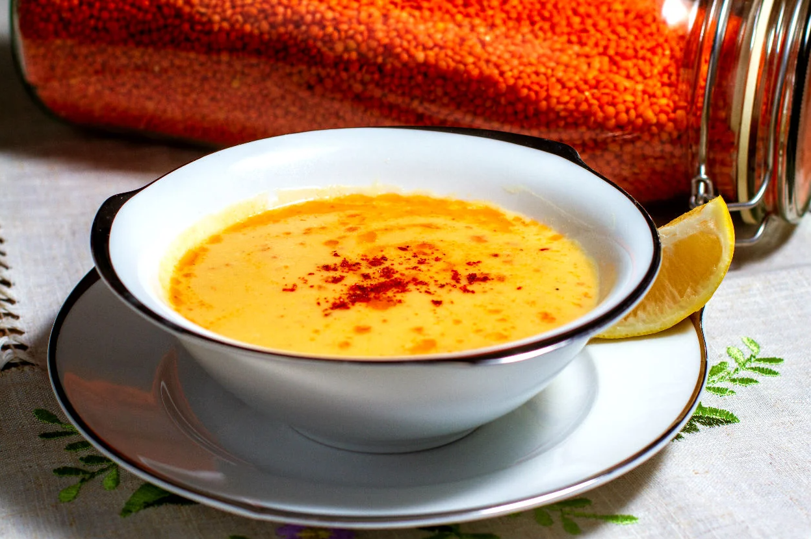

Mercimek Çorbası Tarifi
Herkese merhaba!
Bugün sizlere çok lezzetli bir Mercimek Çorbası tarifi vereceğim.

Mercimek Çorbası Tarifi için Malzemeler
- 2 su bardağı kırmızı mercimek
- 1 adet soğan
- 2 yemek kaşığı un
- 1 adet havuç
- Yarım yemek kaşığı biber ya da domates salçası
- 1 tatlı kaşığı tuz
- Yarım çay kaşığı karabiber
- 1 çay kaşığı kimyon
- 2 litre sıcak su
- 5 yemek kaşığı sıvı yağ
Mercimek Çorbasının Yapılışı
- Kırmızı mercimek çorbası için sıvı yağı tencereye alınarak yemeklik doğranan soğanlar hafif pembeleşinceye kadar kavrulur.
- Daha sonra un ilave edilerek kısık ateşte kavurmaya devam edilir.
- Salça kullanılacak ise salça ilave edilir, kavrulduktan sonra küp küp doğranmış havuç ve iyice yıkanıp suyu süzülen mercimekler ilave edilir.
- Üzerine su eklenerek karıştırılır ve tencerenin kapağı kapatılır. Çorbamız kaynayana kadar orta ateşte, kaynadıktan sonra mercimekler ve havuçlar yumuşayana kadar ara ara karıştırılarak kısık ateşte pişirilir.
- Çorba piştikten sonra el blenderı ile güzelce ezilir. Eğer blenderiniz yoksa süzgeçten de geçirebilirsiniz.
- Karabiber, tuz ve isteğe bağlı olarak kimyon eklenir ve karıştırılır. 5 dakika daha pişirelerek ocaktan alınır.
- Kıvamı koyu gelirse size, bir miktar su ilave edilerek bir taşım kaynatılır.
- Bu arada küçük bir tavaya iki yemek kaşığı tereyağı alınır, kızdırılır ve bir tatlı kaşığı kırmızı toz biber eklenerek ocaktan alınır.
- Mercimek çorbası servis kasesine alındıktan sonra üzerine kırmızı biberli sos gezdirilir ve bir dilim limon ile servis edilir.
Mercimek Çorbası Püf noktası Nelerdir?
Mercimeklerin bol su ile güzelce yıkanmasını öneririm. Temiz su çıkana kadar yıkayınız.
Un yerine patates de tercih edebilirsiniz. Patatesleri de havuç ile birlikte çorbaya ekleyebilirsiniz.